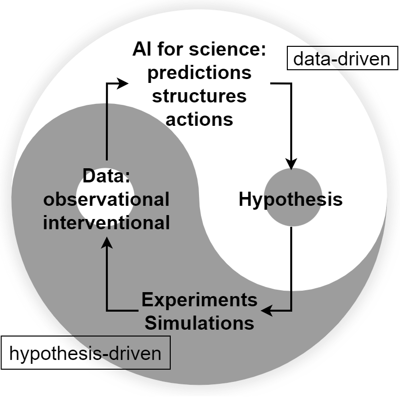
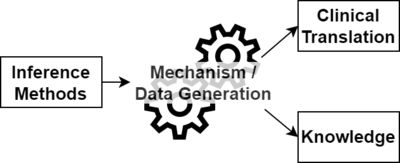

Welcome.
I am Haoqi Sun (/'how-chee/), an Instructor in Neurology Department, Beth Israel Deaconess Medical Center (BIDMC) and Harvard Medical School (HMS), part of Clinical Data Animation Center directed by Professor M. Brandon Westover, MD. PhD. You can call me Hugo if you want.
Email: ude tod dravrah tod cmdib ta 3nush (ti esrever)
 https://orcid.org/0000-0002-5041-8312
https://orcid.org/0000-0002-5041-8312
Motto: "Understand how it works".
Research Philosophy (How I think science works)

Inspired from Wang et al. Scientific discovery in the age of artificial intelligence.
Nature 620.7972 (2023): 47-60.
Link
Research Framework

Use AI to assist research:
- Use AI to extract phenotypes that otherwise cannot be extracted
- Use AI to make decisions that otherwise cannot be done
- Use AI to propose new hypotheses in an optimal way
Research Areas
- Sleep Medicine
- Sleep-based biomarkers for brain health and aging
- The role of sleep in neurological diseases
- Causal Inference in Neuroscience and Neurology
- Causal effect estimation
- Mediation analysis to understand the affecting pathways
I am trained in AI stuff, brain stuff, Bayesian stuff, computational neuroscience, and bioinformatics.
Publications
All publications: Google Scholar
Selected papers:
- Sun, H., Paixao, L., Oliva, J.T., Goparaju, B., Carvalho, D.Z., van Leeuwen, K.G., Akeju, O., Thomas, R.J., Cash, S.S., Bianchi, M.T. and Westover, M.B., 2019. Brain age from the electroencephalogram of sleep. Neurobiology of aging, 74, pp.112-120.
- Sun, H., Ye, E., Paixao, L., Ganglberger, W., Chu, C.J., Zhang, C., Rosand, J., Mignot, E., Cash, S.S., Gozal, D. and Thomas, R.J., 2023. The Sleep and Wake Electroencephalogram over the Lifespan. Neurobiology of Aging.
- Hogan, J., Sun, H., Aboul Nour, H., Jing, J., Tabaeizadeh, M., Shoukat, M., Javed, F., Kassa, S., Edhi, M.M., Bordbar, E. and Gallagher, J., 2020. Burst suppression: causes and effects on mortality in critical illness. Neurocritical care, 33, pp.565-574.
- Sun, H., Ganglberger, W., Panneerselvam, E., Leone, M.J., Quadri, S.A., Goparaju, B., Tesh, R.A., Akeju, O., Thomas, R.J. and Westover, M.B., 2020. Sleep staging from electrocardiography and respiration with deep learning. Sleep, 43(7), p.zsz306.
Tools
Service
- Consultant, AI in Sleep Medicine Committee, American Academy of Sleep Medicine, 2020-2023
Grants